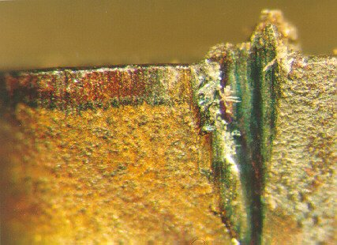
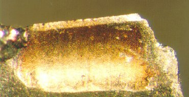
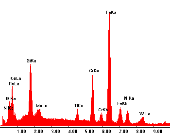

OBJETIVOSCom a finalidade de obter dados de comportamento de usinagem com diferentes ferramentas de geometria definida, o Grupo de Ensaios de Usinabilidade (GEODEF) desenvolve trabalhos de ensaios de usinabilidade, considerando o comportamento de desgaste de ferramentas, acabamento para diferentes condições de usinagem, tipos de cavacos apresentados e forças de usinagem. Estes trabalhos são realizados em parceria com fabricantes de ferramentas de corte com geometria definida. PROCEDIMENTOSPara o ensaio de comportamento de desgaste são realizados ensaios com diferentes parâmetros de corte, e através de medições de desgaste pré-estabelecidas durante o ensaio levantam-se as curvas de desgaste. 
Desgaste de Flanco Para o ensaio de qualidade superficial são medidos parâmetros de rugosidade, variando-se parâmetros de usinagem.  Desgaste de Cratera Para os ensaios de forças de usinagem são analisadas as forças
para diferentes parâmetros de usinagem. RESULTADOSOs resultados obtidos nos ensaios de usinagem têm a grande influência
da ferramenta de corte sobre diferentes critérios de usinabilidade.
Ensaio de Torneamento As ferramentas são analisadas em paralelo aos ensaios em um microscópio eletrônico de varredura (MEV), para apoiar conclusões de desgastes e ajudar a esclarecer possíveis elementos residuais na região de corte.  Análise no MEV |